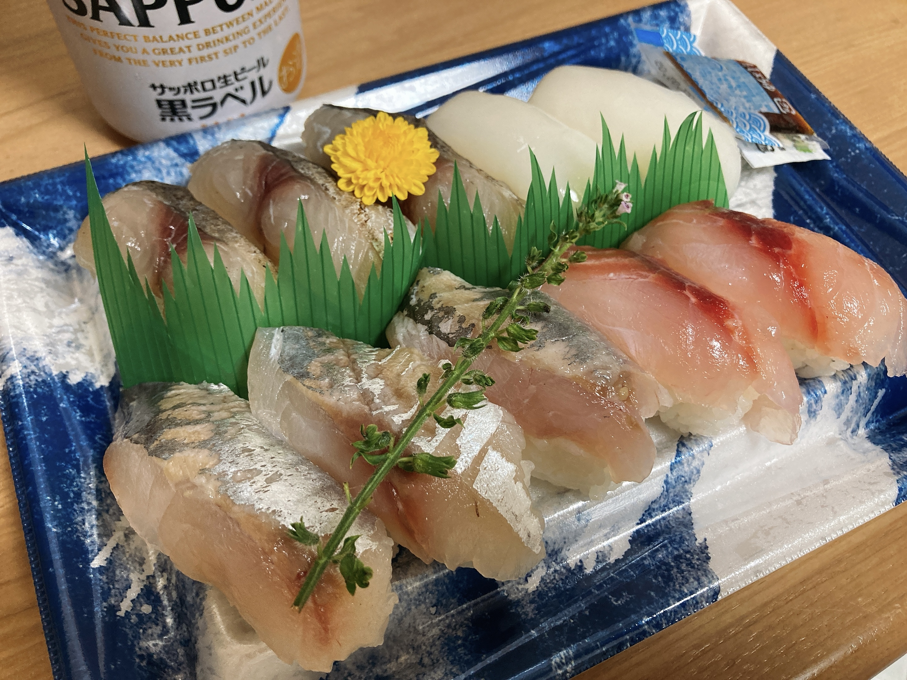
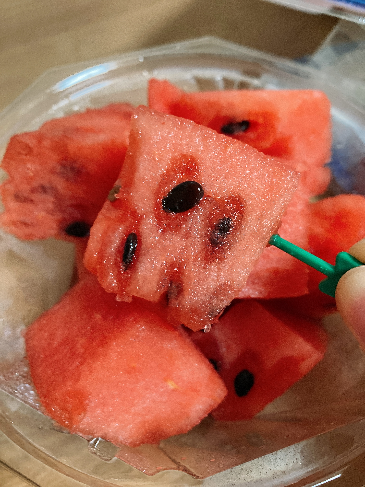

待ちに待った金曜日である
夏休みに平日という概念があるのか。あるんですねえそれが。残念ながら今年の夏休みは平日毎日予定が入っている1ので、金曜日が来ると純粋に嬉しい。明日はフリーなのでやっと課題に集中できます……。
今日は待ちに待った金曜日ということで、🥰🍣🍻！

日本酒を一瓶わざわざ買って飲み切るタイプではないので、寿司でもビールにしがち。なんかスーパーにドライなやつは強い苦味があるので揚げ物向けだと思うんですけど、一番のやつとかIPAとかもうちょい丸いやつは寿司結構合うんですよね。黒ラベルも後者。かなり久しぶりに飲んだけどこれこんな美味かったっけ？
最近おすすめのビールはスーパーにドライなやつの限定醸造のめちゃくちゃ金色なやつ。今日行った店には置いてなかったけど、おおお東急にはまだたくさんあった気が。かなり寿司に合うやつだと思います。限定なので気になる人はぜひ。
ちなみにこの寿司はオリンピックのガチアド半額なやつ。今日は珍しく烏賊が入ってた。くコ:彡。烏賊って安物だとハズレ感すごかったりするけど、これはちゃんと美味しく食べられるタイプのやつで感動しました。
あとは🍉も。

大学生の夏休みってスタートが遅いので、夏休み始まってからちんたらしてるとスイカの旬を逃してしまうという罠。二敗。今年は8月のうちにたくさん食べておきます。
スイカはヒルマが安い。んだけど、量が多いので一回でこれ……？になってしまってなかなか購入に踏み切れない。まあ夏休み中に一回くらいは買えるとうれしいなあ。
-
これのせいで平日の日記は今後も短くなると思われる。 ↩︎